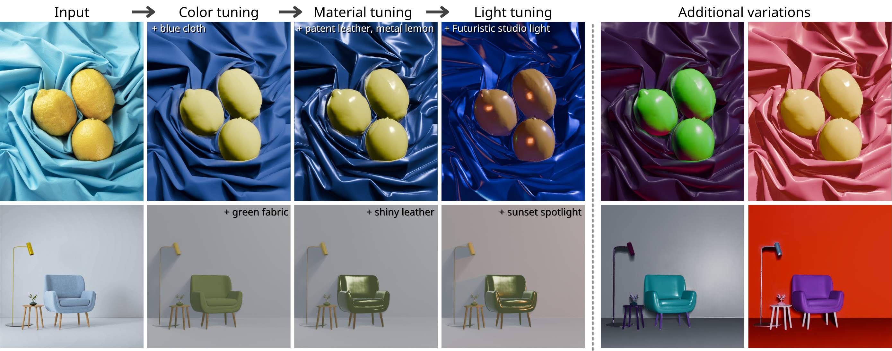

VETI: 3D-Guided Visual Effect Tuning on Images
SIGGRAPH Asia Poster 2026
Computing Science @ Simon Fraser University
Hello / Xin chào! I'm a final-year Computing Science undergraduate student at Simon Fraser University. I've spent the past few years exploring different areas of computing, with visual computing becoming the area I'm most interested in. My current interests include computer graphics, computer vision, and 3D scene understanding.
This summer, I joined GrUVi Lab as a research assistant, where I worked on the functionalization of 3D models. I am also an undergraduate researcher at Tangent Lab, working on a project involving mixed reality and attentional effects.


SIGGRAPH Asia Poster 2026
SIGGRAPH Asia 2026
Undergraduate Researcher
Research Assistant
B.Sc. Computing Science